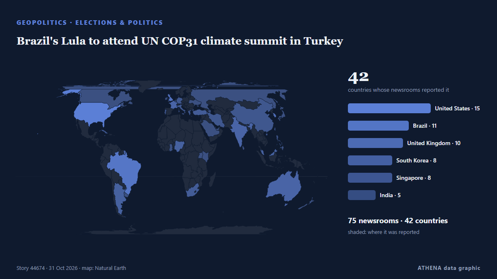

Brazil's Lula to attend UN COP31 climate summit in Turkey

Our experts unpack what Lula’s victory means for Brazil’s ties with Washington and how it could reshape a region trending right. από Atlantic Council
Αναφέρθηκε ανεξάρτητα από 76 μέσα σε 42 χώρες από τις 26 Οκτ, πρώτο το Atlantic Council· η κάλυψη κορυφώνεται. Το ATHENA εκτιμά τον κίνδυνο αυξημένο (4.0/10), κυρίως λόγω της σοβαρότητάς του και της εμβέλειάς του. Βεβαιότητα 89% (υψηλή): το επιβεβαιώνουν 76 ανεξάρτητα μέσα, μέση αξιοπιστία 74%. Μέσα ανά χώρα: Νότια Κορέα (6), Ηνωμένες Πολιτείες (5), Ινδία (2). Κάλυψη: 26 Οκτ έως 28 Οκτ, 50 ώρες.
Γιατί έχει σημασία: Οι εξελίξεις στην ασφάλεια και τη διπλωματία μπορούν να μετατοπίσουν συμμαχίες, εμπόριο και αγορές πολύ πέρα από τις χώρες που εμπλέκονται.
Τι άλλαξε: 6 νέες αναφορές από 6 μέσα στο 24ωρο έως 31 Οκτ.
Πρώτη διατύπωση: Lula’s vote count highest ever for a presidential candidate in Brazil
Οι τίτλοι των ειδήσεων παρουσιάζονται στα αγγλικά, όπως δημοσιεύτηκαν.
Με μια ματιά
Επιλέγεται, βαθμολογείται και γράφεται από τη δημοσιευμένη μεθοδολογία του ATHENA. Κανένας συντάκτης δεν παρεμβαίνει σε μεμονωμένα γεγονότα. Πώς παράγεται ›
| 26 Oct 16:16 UTC | 6 |
|---|---|
| 26 Oct 22:16 UTC | 2 |
| 27 Oct 04:16 UTC | 5 |
| 27 Oct 10:16 UTC | 5 |
| 27 Oct 16:16 UTC | 5 |
| 27 Oct 22:16 UTC | 2 |
| 28 Oct 04:16 UTC | 3 |
| 28 Oct 10:16 UTC | 4 |
| 28 Oct 16:16 UTC | 36 |
| 28 Oct 22:16 UTC | 17 |
| 29 Oct 04:16 UTC | 11 |
| 29 Oct 10:16 UTC | 8 |
| 29 Oct 16:16 UTC | 15 |
| 29 Oct 22:16 UTC | 5 |
| 30 Oct 04:16 UTC | 1 |
| 30 Oct 10:16 UTC | 2 |
| 30 Oct 16:16 UTC | 3 |
| 30 Oct 22:16 UTC | 0 |
| 31 Oct 04:16 UTC | 3 |
| 31 Oct 10:16 UTC | 0 |
| 31 Oct 16:16 UTC | 2 |
| 28 Oct 16:45 UTC | 4.7 |
|---|---|
| 28 Oct 16:48 UTC | 4.1 |
| 29 Oct 09:06 UTC | 4.1 |
| 31 Oct 19:00 UTC | 4.0 |
Γιατί αυτοί οι αριθμοί
Σημασία
Κίνδυνος
Βεβαιότητα
Η κάλυψη — ποιος το ανέφερε και πότε
ο τίτλος όπως δημοσιεύτηκε · ανοίγει το πρωτότυπο- Atlantic Council · Ηνωμένες ΠολιτείεςWhat Lula’s comeback win means for Brazil and beyond
- Scroll.in · ΙνδίαLula’s ‘miracle’ victory buys time for Brazil, resonates globally amid rise of far-right
- Anadolu Agency (English) · ΤουρκίαUN chief welcomes Brazil’s presidential election, takes note of Serbia vote
- PBS NewsHour · Ηνωμένες ΠολιτείεςLula bucks regional shift to the right and denies Trump a powerful ally in Brazil
- Foreign Policy · Ηνωμένες ΠολιτείεςLula Defies Latin America’s Pro-Trump Wave
- The Jerusalem Post · ΙσραήλTrump denies discussing Netanyahu request for another endorsement: ‘I never spoke about it’
- Rappler · ΦιλιππίνεςLessons for the Philippines: AI content surge bypassed Brazil’s election rules — report
- Xinhua (English) — page reader · ΚίναBrazilian vice president rejects Trump's claim of election manipulation
- The Korea Times · Νότια ΚορέαLula responds to Lee's congratulations on 4th presidential win
- The Rio Times · ΒραζιλίαPetrobras Sheds US$24B in Value on Lula Win
- Korea Herald · Νότια ΚορέαLee suggests ways around legislative delays in lowering juvenile criminal age
- The Korea Times · Νότια ΚορέαLee, Lula swap warm words after Brazil election
- Anadolu Agency (English) · ΤουρκίαOPINION - Brazil has chosen, and Lula must deliver
- Cyprus Mail · ΚύπροςDmytro Rukin on Brazil’s new FX rules: what changes for US companies selling to Brazilians
- The New Arab · INTWhat Lula’s victory means for Palestine solidarity in Brazil
- Tehran Times · ΙράνBrazil’s elections: How Lula preserved sovereignty
- Al Jazeera English · ΚατάρLula’s victory echoes across BRICS after fears of a Bolsonaro win
- CNBC World · Ηνωμένες ΠολιτείεςLula’s election win leaves Brazil facing a fiscal tightrope
- The Portugal News · ΠορτογαλίαWhere most Brazillians in Portugal voted for Lula?
- ANSA English · ΙταλίαMattarella to Lula, confident that friendship between Italy and Brazil will deepen
- ANSA English · ΙταλίαMattarella to Lula, confident that friendship between Italy and Brazil will deepen
- Nile Post · ΟυγκάνταPresidential Secretary Kakande Bashes Mayanja Over Digital Number Plates Contract
- The New York Times (World) · Ηνωμένες ΠολιτείεςBefore the election, Netanyahu offered a grim economic forecast for Israel.
- The Korea Times · Νότια ΚορέαLee warns against 'irresponsible extremism' jeopardizing reforms
- The Korea Times · Νότια ΚορέαPresident Lee to hold meeting on national safety
- Premium Times · ΝιγηρίαAfrilition: Brazil’s valiant stride towards Pan-African excellence, By Adéwálé Àjàdí
- The Korea Times · Νότια ΚορέαLula's surprise win hits Korean investors in Brazil bonds
- Indian Express · ΙνδίαLula bucks the rightward tide in Latin America
- Gulf News · Ηνωμένα Αραβικά ΕμιράταFlavio Bolsonaro arrives in Florida after Brazil election loss
- DW English · ΓερμανίαFlavio Bolsonaro lands in US, declares himself 'leader' of Brazil
- The Diplomat · ΙαπωνίαLula’s Election Win in Brazil Is a Relief for China
- BBC News · Ηνωμένο ΒασίλειοWhat we know as Flávio Bolsonaro lands in US after Brazil election loss
- Agência Brasil (English) · ΒραζιλίαLula terms Flávio Bolsonaro’s escape “shameful”
- interest.co.nz · Νέα ΖηλανδίαAnother crash landing for Brazil's economy?
- Taipei Times · ΤαϊβάνLula killed the ‘Donroe Doctrine’
- Taipei Times · ΤαϊβάνFlavio Bolsonaro departs from Brazil
- France 24 English · ΓαλλίαDefeated presidential candidate Bolsonaro lands in Miami after fleeing Brazil
- Cyprus Mail · ΚύπροςBolsonaro lands in Miami with family after Trump offers Brazil exit
- ProtoThema English ·Flávio Bolsonaro arrives in Miami with his family after fleeing Brazil via Argentina and Ecuador
- BBC News · Ηνωμένο ΒασίλειοFlávio Bolsonaro denies fleeing Brazil after landing in Miami